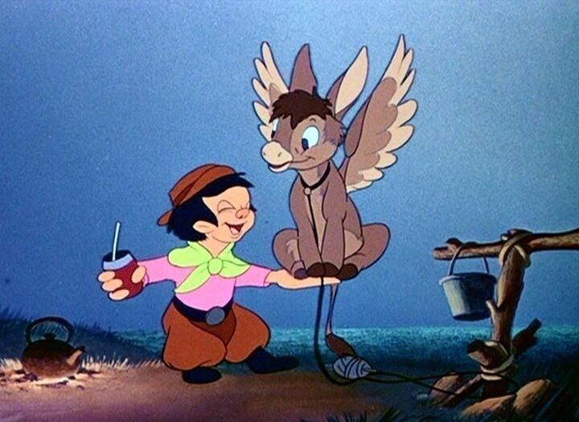

In the 1940's, Walt Disney Studios started producing a bunch of package films, made up of short films with additional transitional animation in between, presumably to save money. The first two, "Saludos Amigos" and "The Three Caballeros," were comissioned by the US government as part of a goodwill tour for Latin America and South America. Of the two, "Three Caballeros" is the one that tended to be released or mentioned more often (I had an old VHS of it long before "Saludos" got a VHS release). As a kid, and even more so as an adult, "The Three Caballeros" is... weird.Unlike the prior movie, there's less "documentary"-style footage, and the film is mostly animation, with more of a romantic-perspective of the countries it depicts rather than pure facts and information. The premise is that Donald Duck, in a dark room, receives a big package in the mail for his birthday, on Friday the 13th. Inside there appear to be three smaller packages, and he opens them one at a time, slapstick comedy hitting Donald at each instance. The first present is a film projector, showing him shorts and info about his distant bird cousins in Latin America. The second is Jose Carioca, the fast-talking bird from Brazil, returning from "Saludos Amigos" to wish Donald well and to give him another dream-inspired tour of his country. The final present comes from Mexico, introducing us to a new bird-friend, Panchito Pistoles, who is happy to give a tour of HIS country. Each tour is made possible with large picture books that the birds can jump into. There are two traditional, "Silly Sympony"-style shorts in the movie, in the first half. One is about a penguin that hates the cold, and tries to escape Antartica on a journey to a more tropical paradise. A second short is about a child Gaucho who discovers a donkey with wings, forming a bond with him, and working together to win a local race. They're both cute and fun, but of course feel more suited to television than a theatrical production.The remaining segments, guided by Jose and Panchito, are surreal tours and musical dances through their respective countries, with romantic songs in the background to set the mood. These are meant to invoke a sense of cultural pride and wanderlust. They are quite imaginative visually, using color in surreal ways, like a kaleidoscope of samba rhythm. Panchito's entrance in particular is a fireworks frenzy that wouldn't be out of place in "Fantasia."  Beyond the animation, there's actually a lot of live-action footage. Unlike "Saludos," it's all staged, and is used in hybrid scenes where the 2D characters interact and dance with the human characters. It's a very early example of what "Who Framed Roger Rabbit" or "Mary Poppins" would do decades later, and it's a little rough, but is impressive to watch nonetheless. The novelty makes these scenes fun, although the latin singers tend to sing for far too long on screen, overstaying their welcome. Being such beautiful women, Donald and his new friends are happy to dance with them for as long as they like.Disney Plus has a cultural disclaimer for both "Three Caballeros" and "Saludos Amigos." After watching both, I still don't understand why a disclaimer was warranted. If anything, I was more offended by Donald being such a "wolf" (as the others describe him), playfully chasing after pretty girls on Mexican beaches. Which he does a lot here. I don't think I've seen a Disney character this excited by girls elsewhere.There's some merit to "The Three Caballeros," especially for its experimental visuals. But there's also a lot of missed opportunity in the story. When they finally sing the title song, about how the three birds are inseparable... under what conditions? They just met! It would have been fun for them to actually go on a journey, instead of being tourists in a dreamscape. Or at least for Jose and Panchito to appear in future shorts with Donald, but as far as I'm aware, the two were never used again, except when referencing this movie. "The Three Caballeros" is a fun diversion, and aside from the "Fantasia" movies, it might be one of the better package-anthologies Disney put out during this period, if only for the interesting and colorful sequences and songs. It might not be essential viewing, but it's worth taking the trip once.
- "Ani" More reviews can be found at : https://2danicritic.github.io/ Previous review: review_The_Thief_and_the_Cobbler Next review: review_The_Tibetan_Dog